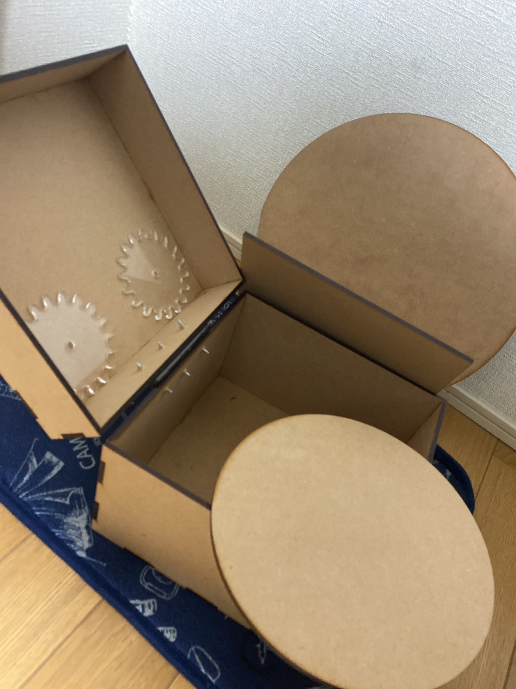
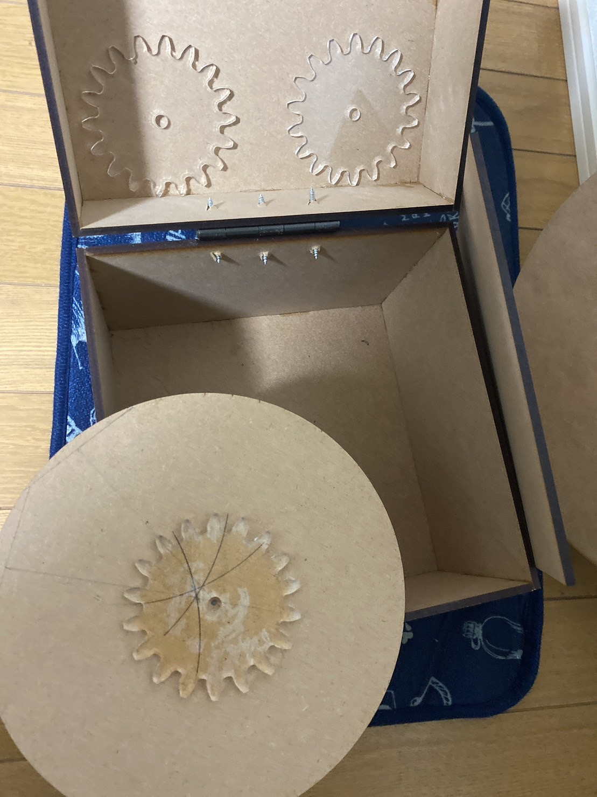

- ＜レコードプレイヤー＞
完成形（途中）


レコードを自作しようと、考えたとき回すのは手動でと考えていたが、回す速度やレコード自体の大きさが種類によって違い、かなり見切り発車でやってしまい自分に落胆してしまいました。
また、レコードは奥が深く、一筋縄ではいかないことを実感しました。
＜今回、部品を作るのに使ったサイト＞
箱を作りたい場合
ここを参照
ガチャガチャやレコードのような回る機構（歯車）を作りたい場合
ここを参照
＜まとめ＞
今回の失敗を今後の課題とし完成に挑戦したいと考えています。（３年？くらいまでに）
（モーターで回せばいいのかな？そもそも、音を鳴らすための、針？みたいなものが必要か？）